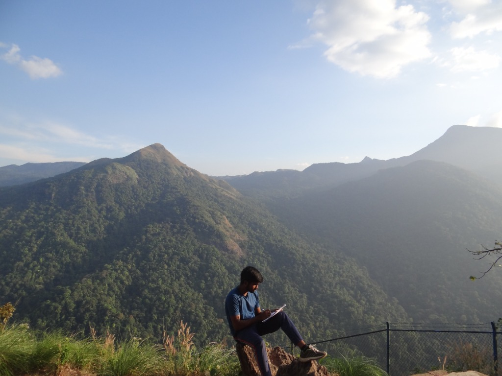
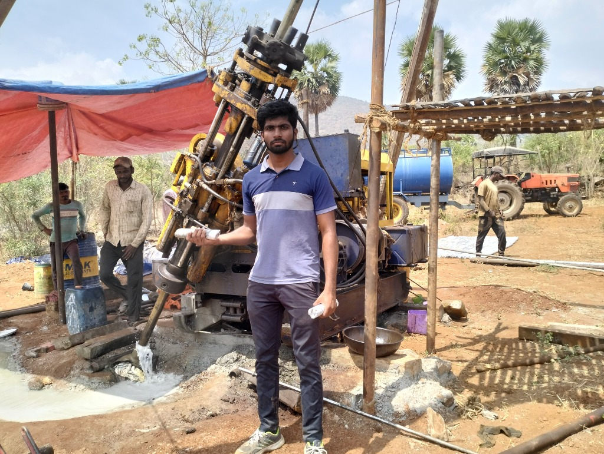
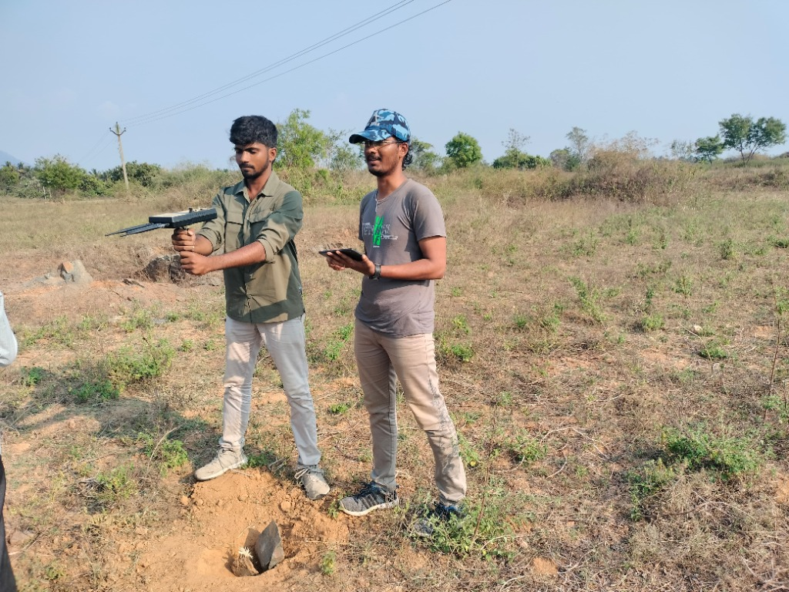
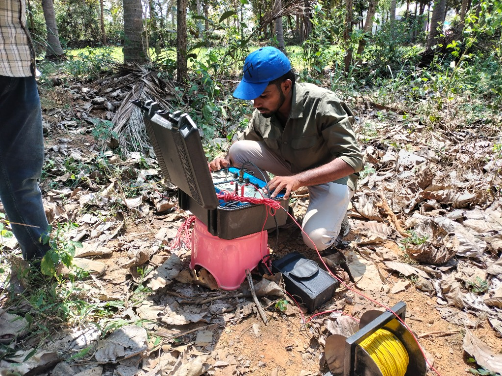
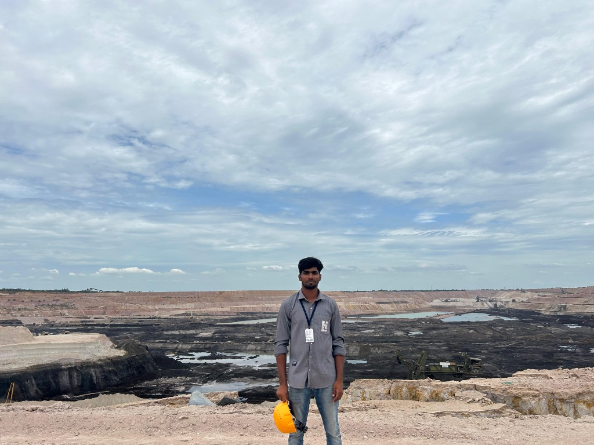
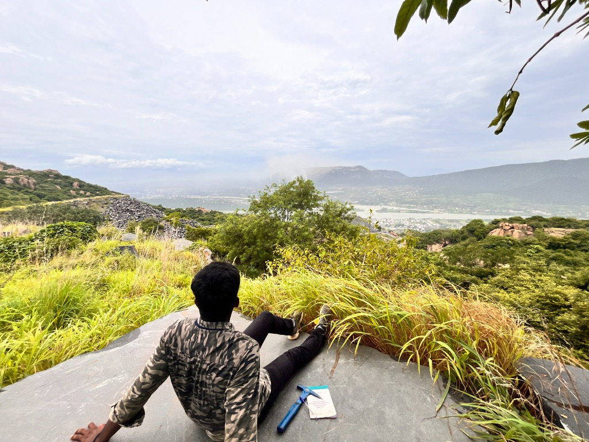

MSc Geology — Founder & CEO, K-GeoScience Consultancy
"From Field to Cloud: Merging Traditional Geology with Modern Tools"
This consultancy was built around a simple idea: good geology should be understandable, reproducible, and useful.
We work at the intersection of geology, geospatial analysis, and hydrogeology, supporting environmental studies, mining projects, infrastructure planning, and academic research. Every project is handled with the same care you'd expect in a research setting—clear methods, documented assumptions, and results that can be explained, not just displayed on a map.
We collaborate closely with consultants, researchers, engineers, and institutions, adapting our work to fit regulatory requirements, project timelines, and real-world constraints. Whether the output is for an EIA report, a research paper, or decision-making on the ground, the goal is always the same: sound science that holds up under scrutiny.
We follow a transparent, step-by-step approach.
Each project begins with understanding the objective, not just the dataset. We discuss the study area, regulatory or academic requirements, scale of analysis, and the practical decisions the results will support.
Data selection and processing are done carefully, with attention to satellite choice, temporal consistency, and limitations. We rely on standard, widely accepted methods—NDVI, NDWI, LST, BSI, change detection, and hydrogeological interpretation—implemented using tools like Google Earth Engine (GEE) and GIS platforms for accuracy and repeatability.
Results are not treated as final until they are checked against ground context, geological logic, and project purpose. Maps, figures, and datasets are prepared in formats suitable for EIA documentation, technical reports, or academic use, with clear legends and explanations.
Throughout the project, communication remains open. Revisions are based on feedback, not guesswork. The aim is to deliver work that clients can confidently submit, present, or build upon.
Real work, real environments — from mountain surveys to drilling sites





